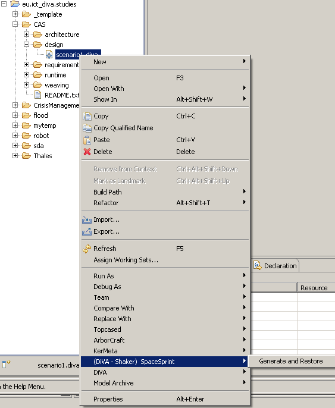
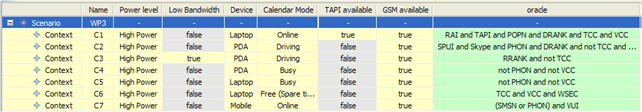
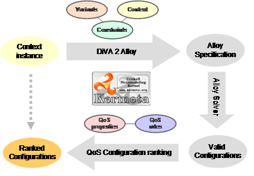
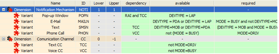
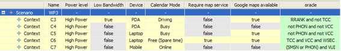
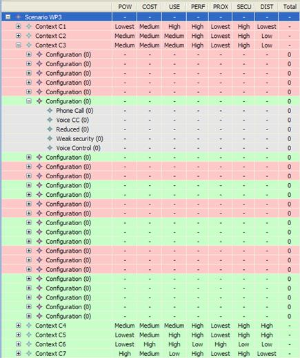
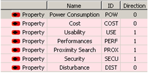
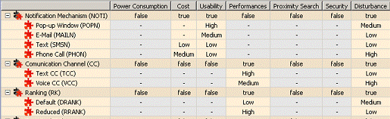
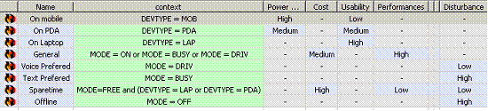
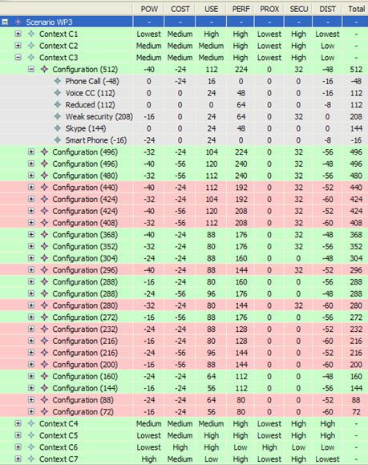

How-to
The first activity when defining test cases is to identify and select a set of representative context scenarios. To aid us with this we use the SpaceSprint tool that automatically does the selection based on which coverage criteria you choose. These criteria offer a compromise between different fault characterizations, number of context, and generation time. Selecting input context scenarios requires the developer to know the advantages of each coverage criterion and to have an insight into the adaptation model.
The second activity is to specify a partial expected configuration for each context scenario (i.e. variants the developer would expect the adaptation rules to select in the given scenario). Note the meaning of “partial”; this expression is not supposed to define the one, single configuration to be used (even though it could) in the given context scenario, but rather which variant(s) should at least be included in the configuration. Any configuration containing those variants would then be a valid configuration, which also implies that the more variants you add to an expected configuration the fewer valid configurations you will get – if any. This task requires that the developer tries to make a direct coupling between the context scenarios and the configurations.
As can be seen, developing the partial expected configurations requires that the developer has insight into the adaptation model. However, the exercise of defining these expected configurations provides knowledge that will help in specifying constraints and priority rules. That is, the more the developer works with and gains insight into the adaptation model, the better equipped he is to define the expected configurations, which again allows better testing and validation, which again leads to better insight, etc.
Modelling the adaptation model and writing the tests can be considered doing the same thing twice. However, to be able to test it is always required to specify things twice. Technically it is possible to infer the configurations from the constraints – that is what the simulation does – but the point is to validate the constraints, and if we do this nothing is validated anymore. It is however always possible that one will repeat the same mistake twice, but to mitigate this problem the formalisms used to define an artefact (in our case, the adaptation model) and the oracle to test it should be different. Here it is the case since on the one hand we write dimensions, variants and constraints and for the oracle we use partial configurations.
We suggest evolving test cases through an iterative and incremental process of selecting input context and specifying partial expected configurations (oracles):
1. [Activity] Refine input context scenarios based on previous task. For each iteration consider:
o Add and refine a manageable number of input contexts.
o Use the tool as support, but validate and complement as developer.
o When using the tool, start with the simple criterion, and add and refine criteria in increments.
o Make sure newly added context from Task 1 is included.
o If faults are uncovered during simulation, developers should use the maximum amount of test cases to isolate the fault culprit. If the existing test cases are insufficient, they should create new test cases by considering the missing context variable values that are related with the fault. If looking for rule interaction faults, use the DEP criterion. If looking for completeness of the model with respect to the context, use the pairwise criterion.
2. [Activity] Refine expected partial configurations based on context data and previous task. For each consideration consider:
o Start with simple configurations and refine as knowledge into the adaptation model grows.
o Make sure newly added variants from Task 1 are included.
o Make sure that each variant is present in at least one partial expected configuration. If a variant is never expected to be a part of any configuration, the input context data, variant or the oracles should be re-evaluated.
3. Go to the next task of the practice (Task 3, see Figure 32).
CRM example application – defining test cases
The SpaceSprint tool can automatically generate partial test cases to simulate and test the adaptation model. Notice that such test cases are partial since engineers must specify the expected configuration (oracle). As mentioned before, SpaceSprint provides four test data generation criteria. Engineers may generate data using all the criteria at the same time to later filter the data they need. Figure 35, illustrates this menu over the CRM adaptation model.

Figure 35: Pop-up
menu showing the SpaceSprint data generation.
Figure 36: Window showing the data generation progress bar.
The test
data generation can take a few moments depending on the size of the adaptation
model (number of rules, numbers of elements in the context model, etc.). While SpaceSprint generates testing data, a progress bar displays
the progress of the operation (see Figure 36).
Finally, SpaceSprint will generate a copy of the
adaptation model that will contain the generated data, ready to be refined and
simulated.

Figure 37: Part
of the simulation model for the CRM system.
Figure 37 shows a list of seven test cases to simulate for the CRM system. To use the editor the developer has to set up different test cases in the “Simulation Input Editor”, see Figure 37. We first create a scenario, which is a grouping of test cases. Then, for each test case we define, we have to decide the value of each context variable of the system (defined in the context model). In the end we have to specify a partial configuration to be expected (the oracle expression).
Take for example context number four (C4), where we define the context as that the device has a high power level, has high bandwidth, is a PDA, the user is busy, TAPI is unavailable, and GSM is available. In this situation, we expect that a preferred configuration should at least not be using a mobile phone (not PHON) and a voice communication channel (VCC). During the first part of simulation – the resolution of hard constraints – the possible configurations of the adaptation model are validated towards the oracle expressions and colour-coded according to the results.
1.3 Task 3: Modelling constraints
Description
The idea of this task is to specify adequate local hard constraints in order to break the exponential growth of the potential configurations in the system. In Figure 39 these constraints corresponds to the three columns named dependency, available and required. The former is used to define arbitrary dependency constraints between variants belonging to different dimensions. In practice arbitrary first order logic expressions can be used to express such inter-variant constraints. The latter two constraints are local to each variant and specify in which context the variant can (available) or must (required) be used, and can be any first order logic expression combining context variables. In practice, variant constraints allow reducing the set of configuration suitable for a particular context. However, in general constraints cannot point to the specific configuration which should be used.
To define further:
· Dependency: this is a constraint between variants, which tells which other variants the specified variant depends on.
o Example: in the figure, “Phone Call” requires a “Voice Communication Channel” (VCC in Figure 39).
o Type: Restricts mildly.
· Available: this column states for which context situations the specified variant is available for use.
o Think: Available is saying "This variant will only be available in the context situations I describe here" (mathematically: “variant ONLY IF context”).
o Example: the “Phone Call” variant can only be used when the user is not busy (not (MODE=BUSY) in Figure 39).
o Type: Restricts moderately.
· Required: this column states for which context situations the specified variants must be used.
o Think: Required is saying "For this context situation, any configuration (of variants) not using this variant is invalid" (mathematically: “variant IF context”).
o Example: the “Phone Call” variant must be used when the user is driving (MODE=DRIV in Figure 39).
o Type: Restricts strongly.
This solution of attaching constraints to a variant was chosen over having a global set of arbitrary constraints. This makes the constraints easier to write and understand since they are local and specific.
The simulation feature of the DiVA editor allows us to execute the test cases in order to validate both the constraints and the priority rules, which is performed in Task 3 and Task 4, respectively. This is based on the two-part process depicted in Figure 38:
1. The hard constraints are processed in order to enumerate candidate configurations for the system. At this stage the configurations have no scoring and are consequently sorted in a random order. A configuration is colored green if it satisfies the oracle expression and red if it does not.
2. The priority rules are used to compute a score and rank the candidate configuration.
After the second part, the candidate configuration which has the best score is chosen and the system can be adapted.

Figure
38: Implementation of the adaptation
simulator. Note that the Alloy reasoner used during
design time simulation is only one of several reasoners
in the reasoning framework. The other reasoners are
used at runtime (see Section 7.2).
How-to
To determine the adaptation logic we must specify constraints associated to variants. This is a rather complex process which is very hard to complete as wanted and without errors in one go. Therefore we suggest an iterative and incremental approach to the modelling of constraints that involves continuous validation. Validation is performed by simulating the model towards the test cases as described in Task 2.
The simulation results in a list of configurations that are either green or red, depending on whether or not they satisfy the oracle expressions. Having red configurations is a hint that something is wrong in the model, as it does not make sense to risk deploying configurations that are not according to the oracle (remember, expected partial configuration).
The process should be as follows:
1. [Activity] Refine constraints based on previous task or activity. For each
iteration consider:
o Only model a few constraints at a time.
o Start with the dependency and
availability constraints, then proceed with the
required constraints.
2. [Activity] Simulate the model against the test cases and analyse results:
o Red configurations means the model is not done. First, re-check the
oracle to check that it is not too strict. If this is not the case, i.e. all
the variants in the oracle expression should always be used in the context
scenario, then the red configurations are invalid and should never be deployed
(for that context scenario). This means adding more contraints
until red configurations are gone.
o A large number of configurations per context usually implies the need for more or stronger constraints.
o Too few or no configurations usually means that the constraints are
too strict or that the variant model is not complete. It could also mean that
this is a context that should/will never be reached. If so, the test case is
irrelevant and should be removed.
o A large number of green coloured configurations might mean that the
oracle expressions are too weak.
3. [Decision] If the constraints model needs refinement, go to back to
1.
4. [Decision] If the context and variability model or test cases need refinement,
retrace to Task 1 or 2, respectively.
5. Go to the next task of the practice (Task 4, see Figure 32).
CRM example application – Defining constraints

Figure 39: Adaptation
constraints in the CRM system.
Figure 39 presents a set of hard adaptation constraints defined for the CRM system. Let us consider for example the “Phone Call” Notification Mechanism. This strategy involves calling the user of the system. To be able to use this functionality a Voice Communication Channel must be available. This is modelled in the dependency column: The expression “VCC” expresses that a configuration only can contain the Phone Call variant then VCC is also a part of the configuration. Next, the user can not be notified via Phone Call when he is in busy mode (for example in a meeting). This is expressed in the available column with the expression “not (MODE=BUSY)”, which means that the Phone Call variant is available in all context except when the user is in busy mode. Finally, if the user is driving, he has to be notified by phone, because Pop-up Window, E-Mail and Text are no good when his hands and eyes are busy. This is modelled in the required column, and says that when the user is driving, any configurations not containing the Phone Call variant are invalid (and since only one variant from the Notification Mechanism dimension can be used
CRM example application – Simulating constraints

Figure
40: Part
of the simulation model for the CRM system.
Figure 40 shows a partial list of input context situations to simulate for the CRM system. For each context definition, a value has to be set for each context variable and an oracle expression has to be specified. For example for context C3 the power level is high, the bandwidth is low, the device is a PDA, the user is driving, a map service is not required, and the Google maps service is available. Simulating this model, the output shows that for context C3 we get 24 valid configurations. The simulation results are viewed in the “Simulation Output Viewer”. See Figure 41.

Figure
41: Simulation
output for the constraints of the CRM system.
There is a four-level hierarchy for the rows; scenario, context, configurations and variant. Scenario is simply the grouping of input context scenarios. Inside each context scenario is a list of the valid configurations that context, and each configuration specifies its set of variants.
Figure 41 shows a simulation of an adaptation model with constraints but no priority rules, and consequently only shows the information necessary for this task of the process:
- The set of configurations and contained variants identified for each context scenario is decided by the hard constraints (see Figure 38).
- A configuration is coloured green if it contains the variants in the oracle expression. Otherwise it is red. As mentioned, red configurations are invalid.
- If a context row is green, it means that at least one of the found configurations is according to the oracle expression in the test case, and that at least one of these are ranked first (with highest score).
At this stage the configurations have no scoring and are consequently sorted in a random order, as rankings are produced based on the priority rules defined in Task 4. However, the output shows the number of configurations and if they are according to the oracle expression (green) or not (red). Based on this information, the developer can decide if whether or not the constraints and oracles are good enough.
1.4 Task 4: Modelling adaptation policies
Description
At this point, the context variables,
variants and constraints have been modelled. These elements formalize the
variability, the relevant context information and hard constraints between
context and variants. The hard constraints define all the valid combinations of
variants which can be used in a given context. However they do not specify what
combination of variants should be chosen in a particular context. The idea of
the proposed approach is to avoid having to specify the complete adaptation
model with these low level constraints and rather expressing rules at a higher
level of abstraction. This is the role of the properties, impacts and
adaptation policies presented in the following. They complement the adaptation
model with enough information for choosing the best configuration for each
context.
This activity includes associating a set of properties of concern for the adaptive system (see Figure 42). These properties of concern are qualities of the system which should be optimized through the runtime adaptation, for example, the performance or the power consumption. A direction is associated with each property to determine if the property value should be minimized or maximized. Typically, performance should be maximized while power consumption should be minimized. Also, for each property the developer must specify a set of property impact variables which are used when specifying impact values (see next paragraph). These impact variables should be given a weight which should be between 0-5. These weights are used for ranking the configurations during simulation (see description of ranking strategy later in this section).
Once the properties are defined, we need to specify the impact of each variant on these properties (see Figure 43). For each variant, a qualitative impact value can be defined. In practice an integer is used to represent the impact value but this integer just encodes qualitative values such as {0: no impact, 1: low, 2: medium, 3: high}. The reason for using simple qualitative values is that this is sufficient for our purpose; to compare the values of the properties for alternative configuration in order to choose the best suited one.
Finally, we must specify the priority rules (see Figure 44). These rules allow linking the context with the particular set of properties which should be optimized in that situation. Each rule is associated to a context in which it applies and with a set of property priorities for this particular context. Basically these rules allow specifying which properties should be optimized depending on the context. In practice, each property is given a priority value for the context in each rule (see Figure 44). These priorities range from “very low” to “very high” and are also qualitative, and they are relative between properties in one rule. The main benefit of this approach is that the general adaptation policy is captured at a high-level of abstraction. An example of rule at this level might be “if the battery runs low, the power consumption should be prioritized over performances”. By computing the specified impact each variant has with respect to the properties, these rules can be used to evaluate alternative configurations and to choose the most suited for a particular context.
To detail further, the ranking of configurations is done in four tasks:
1. Compute the values of each property for each configuration. The value of a property p for a configuration C is computed by summing the contributions of the variants it contains. If we denote p(C) the value of property p for configuration C, dp the direction of property p and p(v) the impact of variant v on property p, then:
|
|
(1) |
2. Compute the priority w associated to each property p. This is done by evaluating the guards of all adaptation rules and combining the priorities provided by the rules Rtrue which guard is true. Let w(p) be the priority of property p and w(r, p) the priority of property p in rule r, w(p) is:
|
|
(2) |
3. Compute a score S for each configuration C. This is done by summing the values of all properties for each configuration using weight corresponding to property priorities. If we denote S(C) the score of configuration C:
|
|
(3) |
Where K is a constant greater than 1 (fixed to 5 in our experiments). The constant K corresponds to a weigh associated to priorities. K=5 means that 5 contributions with a “Low” priority adds up to the same score as 1 contribution with a “Medium” priority.
4. Rank the configuration according to their scores S.
The ranking process involves summing property values and priorities. In the model these elements are defined as customisable qualitative values as described earlier. In practice simple strategies are applied to transform these qualitative values to integers:
· For the impact of variants the default values are {N/A, Very Low, Low, Medium, High, Very High} which is mapped to {0, 1, 2, 3, 4, 5}. However, the developer can define his own values as well.
· For priorities the values can be {N/A, Low, Medium and High} and they are mapped to {0, 1, 2, 3}
We have kept the computation of the score very simple and based on integer arithmetic since so far our experiments do not seem to require more advanced computation. In the literature more advance mechanisms such as fuzzy-logic have been defined in order to handle qualitative values consistently. As future work we will investigate further if the proposed approach can benefit from such mechanisms.
How-to
The first thing to do is determining what properties of the system the variants consume, improve or affect in some way, and that are relevant for adaptation. For example, should your system include external services, a reasonable goal might be to choose the services that cost less. Other common and important properties are performance, power consumption, usability and security. When defining the impact variables for each property, keep in mind that their weights should be between 0-5, and each variable should have a different value.
The second part is, for each variant, to specify which exact properties it impacts and what this impact is – using the default values ranging from “very low” to “very high” or other self-defined values. The goal here is not to have very accurate values, but to give guidelines for the reasoner to decide which variants are good or bad for which properties. The values need only be approximate and the important thing is that they are relative between variants. For example, concerning external services, we should consider their costs relative to each other. We are not very interested in the exact value of the properties, only that e.g. variant A cost more than variant B. This is the information needed for calculating the scores of variants.
Finally, we specify which properties the system should prioritize for the adaptation in different contexts. This requires the developer to analyze and identify common and important context situations, and decide which properties to prioritize in these. Again, the goal is not the accuracy of the values themselves, but rather their relative value between properties.
The activity goes as follows:
1. [Activity] Refine properties based on previous task or iteration.
2. [Parallel activity] Refine property impacts.
3. [Parallel activity] Refine priority rules. For each iteration consider:
o Identify common and important context.
o Model one or two rules and simulate to see the impact on the ranking
4. [Activity] Simulate the model against the test cases and analyse results. It
is recommended to check the ordering of the configurations and that they are as
expected. If not, go back and tweak the impact values and priority rules.
5. [Decision] If the priority rules model needs refinement, go to back
to 1.
6. [Decision] If the context and variability model or test cases need refinement,
retrace to Task 1 or 2, respectively.
7. Go to next practice (Practice 3, see Figure 32).
CRM example application – Defining properties

Figure 42: Properties
of the CRM system.
Figure 42 presents the seven properties that were defined for the CRM system. These properties correspond to functional or extra-functional properties of the system which should be optimized while the system adapts. For the CRM system the “Direction” fields are set so that we want to minimize “Power Consumption”, “Cost” and “Disturbance” and we want to maximize the “Usability”, the “Performances”, the “Proximity Search” capabilities and the “Security”.
CRM example application – Defining impact
The properties are the abstraction that will be used to express the adaptation policy. Instead of linking the context directly to the variants to be used, we link the context to the properties which should be optimized in this context. To choose the appropriate variants, their impact on these properties has to be modelled. This is done using qualitative impact values.

Figure 43: Impact
of the variants on the properties of the CRM system.
Figure 43 shows the editor that supports the specification of the impact each variant has on the properties. The rows of this table correspond to the dimensions and variants defined earlier and the columns corresponds to the properties of the system. For each dimension the value “true” specifies that this dimension has an impact on the corresponding property. In this case, for each variant a qualitative appreciation of its impact on the property has to be specified. In the example of CRM only the values Low, Medium and High have been used. If we consider for example the “Notification Mechanism” dimension, the model specifies that the notification strategy impacts the cost, usability and disturbance of the system. For each notification mechanism variant values for this impact are provided: The pop-up notification has high usability but is more disturbing for the user than an email. This table is the base of the adaptation optimization since it will be used to make different trade-offs depending on the context.
CRM example application – Defining priority rules

Figure 44: Priority
rules for the CRM system.
Finally, Figure 44 presents the adaptation rules for the CRM system. These rules are “Priority Rules”: they capture what properties of the system matters depending on the context. For example, rules 5 (Voice Preferred) and 6 (Text Preferred) correspond to the specific situation in which the user is driving or is busy in for example a meeting. In these two situations, the system should adjust to different levels of disturbance. The disturbance property of the system is related to the availability of the user. When driving, the user is available but the system should adopt a voice communication channel. On the other hand, when the user is in a meeting, the system should adapt a strategy which only uses text notification for important events. On this example the guard for most of the rules are single context variable but in practice it does not have to be the case. Any arbitrary context expression can be used. If several rules match a given context simple strategies such as using the maximum value for each property are used to combine them.
The adaptation model is now complete. For a particular context, the context variables, variants and constraints define a set of valid configurations. The properties, impacts and priority rules allow comparing these candidate configurations in order to choose the best suited.
CRM example application – Simulating adaptation rules
Again we simulate the test cases shown in Figure 40. However, this time we do a full simulation with the priority rules included. The results are shown in Figure 45.

Figure 45: Simulation
output for the entire simulation of the CRM system.
In addition to the description of the simulation results given during Task 3, after simulating with priority rules:
· The order of the configurations is computed through the priority rules. Within one context, we can see that each configuration is scored against the properties defined for the system, which is a summarisation of the variant scores.
· A context scenario is given a value for each of the properties, and these values are calculated based on the priority rules table (Figure 44).
· Each variant is given a score for each property based on the priority rules.
This time the configurations are also ranked according to the priority rules. As can be seen in the example, there are a lot of green configurations that fulfil the oracle expression for context C3. This indicates that the oracle expression might be too general and should be detailed further. Also, some of the green configurations are ranked really low. If this persists after refining the oracle definitions, the impact values and priority rules should be looked into.